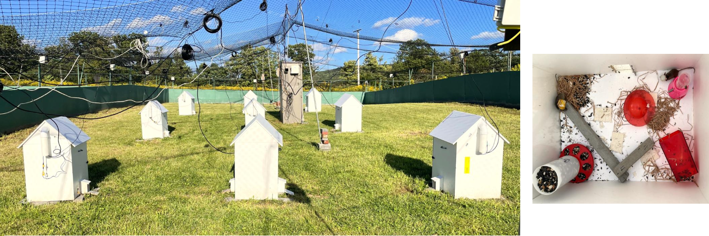

Hippocampal cognitive maps of social territories in a natural environment
Scientific question
How does the hippocampus integrate spatial and social information to organize territorial behavior in natural environments? Animals must establish home ranges, monitor conspecifics, patrol boundaries and respond to intruders, yet how hippocampal representations use environmental and social cues to guide these behaviors remains unclear.
This project combines large-scale neural recordings with continuous multi-animal tracking in an outdoor enclosure to determine how place cells and cell assemblies represent home-range boundaries, social encounter zones and the evolving relationship between spatial location and social context.
Abstract
Territoriality is a common social behavioral trait that emerges in large enough environments across many mammals. For instance, for male mice, holding a territory provides access to food, shelter, and mates. Yet, whether and how the brain represents a territory has remained unknown. Establishing and keeping track of territories requires an integration of spatial and social information, both aspects encoded in the hippocampus. In this study, we rewilded lab mice (C57/FVB, 9 males and 9 females) in a ~35 × 15 m outdoor enclosure with nine shelters. We recorded up to ~150 CA1 and CA2 neurons and simultaneously tracked the positions of freely behaving mice across the development of territories. Implanted male mice established and defended territories. We found that the hippocampus generates an integrated socio-spatial cognitive map during territorial behavior. First, place cells’ representation of the territories increased in parallel to the establishment of territories. Second, the cognitive map had representations of spatial and social information. Third, spatial information of the place fields located around the territory boundaries was higher compared to other place fields. Importantly, performing a semi-controlled territory-intruder assay, we found that these boundaries were ecologically meaningful, as fights and chasing behavior clustered sharply at territory boundaries. Finally, we found that the structure and location of territories, i.e., whether mice sheltered inside the shelters or out in the paddock, differently modulates spatial information of place cells. Our data show, for the first time, the development of an ecological cognitive map of the environment during territorial behavior.
Experimental setup
